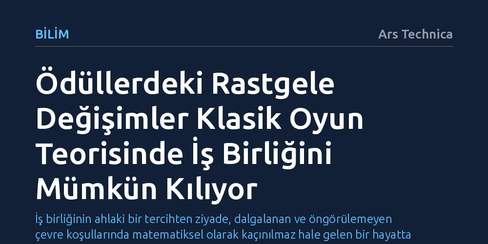

BILIM · Ars Technica · 2026-09-12
Klasik oyun teorisi modellerine rastgele değişen ödüller eklendiğinde, mahkûm ikilemi gibi senaryolarda iş birliğinin kendiliğinden doğduğu kanıtlandı. Yeni çalışma, dışsal çevresel dalgalanmaların bencil stratejileri zayıflatarak ortak faydayı nasıl kalıcı kıldığını gösteriyor.
İş birliğinin ahlaki bir tercihten ziyade, dalgalanan ve öngörülemeyen çevre koşullarında matematiksel olarak kaçınılmaz hale gelen bir hayatta kalma stratejisi olduğunu gösteriyor.

Oyun teorisi, insan davranışlarını ve stratejik tercihleri laboratuvar sadeliğinde incelemenin en temel araçlarından biridir. Ancak geleneksel modeller çok kritik bir varsayıma dayanır: Bir kararın getireceği ödül veya ceza baştan sona sabittir. Gerçek hayat ise sabit getirilerle işlemez; bir seçimin sonuçları zaman içinde, beklenmedik dış faktörlerle sürekli değişir.
Bu kısıtlamanın en belirgin örneği meşhur mahkûm ikilemidir. İki suç ortağının ayrı hücrelerde sorgulandığı senaryoda, kurallar ve cezalar sabit kaldığında matematiksel olarak tek bir denge noktası oluşur: Herkesin diğerine ihanet etmesi. Bireysel rasyonalite ortak bir felaketle sonuçlanır ve herkes kaybeder. Oysa gerçek dünyada insanların ve canlıların bu tür bencil çıkmazlarda dahi sıklıkla iş birliği yaptığı görülür; klasik teori bu uyumu açıklamakta yetersiz kalır.
Araştırmacılar, stratejilerin zamanla evrildiği ve getirilerin rastgele dalgalandığı yeni bir matematiksel model kurarak bu açmazı yeniden ele aldılar. Geçmiş çalışmalar çoğunlukla oyuncuların kendi hamleleriyle azalan kaynakları incelerken, bu çalışma tamamen kontrol dışı çevresel gürültüyü merkeze alıyor. Yazarın ifadesiyle, "Tavşan ne yuvasını basan yağmuru ne de yiyeceğini kurutan kuraklığı kontrol edebilir."
Modelin mahkûm ikilemine uygulanması sarsıcı bir bulgu ortaya koydu: Ödüllere zaman içinde çok küçük rastgele dalgalanmalar eklendiğinde bile sistemde ikinci bir kararlı denge noktası oluşuyor ve iş birliği yapanlar ile ihanet edenler bir arada var olabiliyor. Getirilerdeki belirsizlik ve değişkenlik biraz daha artırıldığında ise ihanet noktası tamamen kararsız hale geliyor; geriye yalnızca iş birliği yapanların hayatta kaldığı bir düzen kalıyor.
Rastgele dalgalanan getiriler, oyun teorisinin diğer klasik çatışmalarında da şaşırtıcı dinamikler üretiyor. Soğuk Savaş'ın nükleer caydırıcılık mantığını temsil eden "tavuk oyunu"nda, ödüller sabitken herkesin direksiyonu kırması ve hayatta kalması kararlı durumdur. Ancak sisteme hafif bir gürültü eklendiğinde direksiyonu kırmayan tehlikeli bir kitle türüyor; dalgalanma büyüdükçe toplum hayatta kalma ile kitlesel çarpışma arasında gidip gelen çift kararlı bir yapıya sürükleniyor.
Taş-kâğıt-makas oyununda ise daha ritmik bir düzen ortaya çıkıyor. Standart oyunda hiçbir kararlı denge yoktur ve oyuncular sürekli üç seçenek arasında gezinir. Getiriler rastgele değiştiğinde ve örneğin taşın makasa üstünlüğü kâğıdın taşa üstünlüğünden farklı bir getiri sunduğunda, popülasyon bir "sınır döngüsü"ne oturuyor. Oyuncuların hamle dağılımları zaman içinde son derece kararlı ve öngörülebilir dalgalanmalar çizerek devrediyor.
Oyun teorisi on yıllardır iktisadi kararları, piyasa hareketlerini ve tüketici tercihlerini modellemek için temel referans kabul ediliyor. Buna karşın, sabit koşullara dayalı modellerin gerçek piyasalardaki ani kırılmaları ve görünüşte rasyonel olmayan ortaklaşa hareketleri açıklamakta zorlanması uzun süredir haklı bir şüphe kaynağıydı.
Bu yeni matematiksel çerçeve, insan doğasını veya oyuncu psikolojisini karmaşıklaştırmadan da zengin davranış modelleri kurulabileceğini gösteriyor. Çevrenin kontrol edilemeyen değişken yapısını denkleme katmak, iş birliğinin neden ve nasıl kök saldığını anlamak için yeterli zemini sağlıyor.